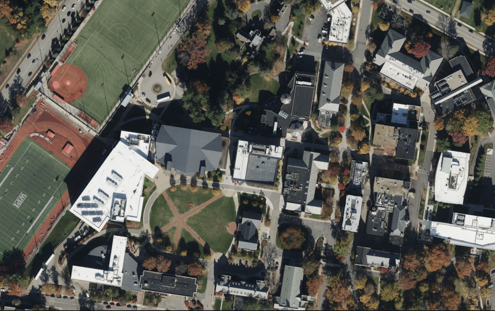
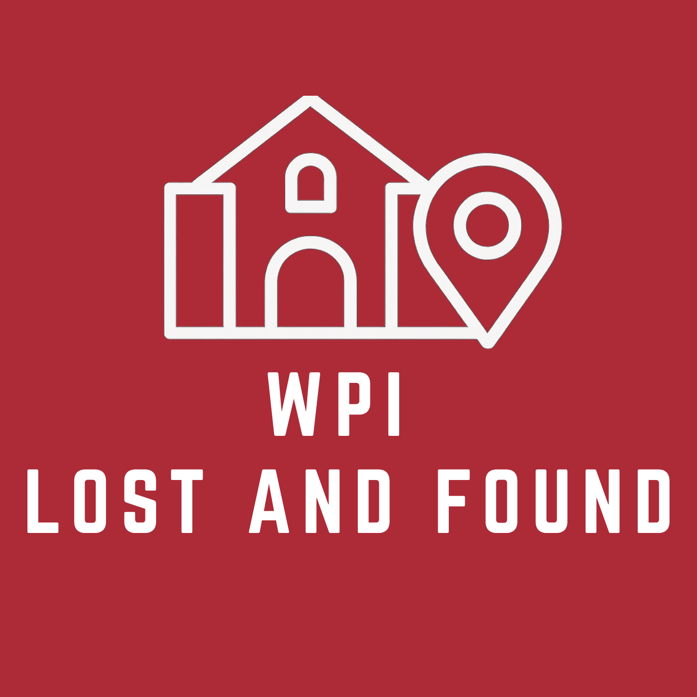

About the Project
The Lost & Found Portal is a comprehensive web application designed to help campus communities manage lost and found items efficiently. Built with Flask and modern web technologies, it provides a user-friendly interface for posting lost items, browsing found items, and connecting finders with owners.
Campus environments often struggle with decentralized lost-and-found collections, leading to low item recovery rates. This application acts as a single, central repository for the entire campus, enabling quick reporting and high retrieval rates through building-based tagging and filtered searches.
Key Features
- User Authentication System - Secure registration, login, and session-based logout for students, faculty, and administrators.
- Interactive Item Posting - Allows users to upload item images, descriptions, building tags, and colors for easy listing.
- Advanced Search & Filters - Dynamic, real-time filtering options to sort items by specific campus buildings, colors, and item status.
- In-App Contact System - Email-based messaging system connecting finders directly with owners while protecting contact details.
- Interactive Campus Map - Visual building selection using an interactive vector SVG map of the campus.
- RESTful API - Integrated JSON endpoints allowing developers to access posts and locations programmatically.
Project Media

Interactive Campus Map Integration

Portal Branding Logo